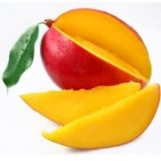

В края на есента и с приближаването на зимата организмът ни започва да отслабва, затова трябва да включим във всекидневното си меню поне един тропически плод. Върволицата от дъждовни и мрачни есенни дни може много успешно да помрачи настроението ни, да ни направи мудни и да затрудни изпълнението на задачите ни. Какво друго освен незабравимите спомени от последната лятна отпуска може да доведе осезаемо тропическото лято при нас?
Почти целогодишно на някои сергии на пазара и в големите вериги магазини можем да намерим разнообразие от екзотични тропически плодове. Някои от тях гледаме с недоверие и не смеем дори да опитаме. Но други все по-смело слагаме на трапезата си.
| Картинка | Име на продукта | Кратко описание | Цена (лв/кг) |
|---|---|---|---|
|  | БИО Манго | Все още екзотичен за нас, тропическият плод манго е един от най-консумираните в света – три пъти повече от банана и десет пъти повече от ябълката. Сочно и с характерен сладко-стипчив вкус, мангото (Mangifera) трудно достига до нашите ширини в достатъчно добър пресен вид. | 8,99 лв/кг |
| БИО Папая | Папаята е полезна за здравето по много начини и този красив оранжев/жълт тропически плод е доказателство, че питателната храна може да има великолепен вкус. Папаята, известна също като папау е богат източник на антиоксиданти, фитонутриенти, витамини, минерали и важни храносмилателни ензими, които имат впечатляващ ефект както вътрешно, така и външно. |
9,59 лв/кг | |
| БИО Ананас | Ананасът се състои от 86% вода, съдържа много прости захари, предимно захароза и органични киселини - главно лимонена, и до 50 мг. аскорбинова киселина. Освен това, в ананаса присъстват витамините В1, В2, В12, РР, провитамин А. В плода се съдържат минерали - калий, желязо, мед, цинк, калций, магнезий, манган, йод. Ананасът има лечебни свойства: стимулира храносмилането, понижава кръвното налягане, предотвратява развитието на атеросклероза. |
6,49 лв/кг |